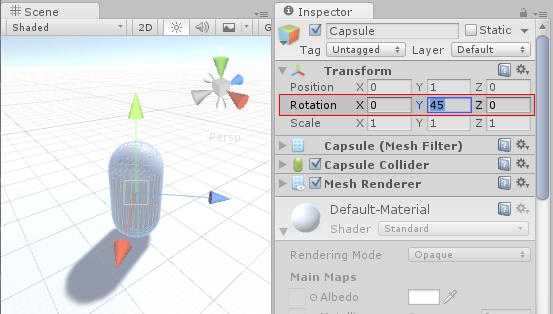

Rotation and Orientation in Unity
Summary
Rotations in 3D applications are usually represented in one of two ways, Quaternions or Euler angles. Each has its own uses and drawbacks. Unity uses Quaternions internally, but shows values of the equivalent Euler angles in the inspector to make it easy for you to edit.
The Difference Between Euler Angles and Quaternions
Euler Angles
Euler angles have a simpler representation, that being three angle values for X, Y and Z that are applied sequentially. To apply a Euler rotation to a particular object, each rotation value is applied in turn, as a rotation around its corresponding axis.
- Benefit: Euler angles have an intuitive "human readable" format, consisting of three angles.
- Benefit: Euler angles can represent the rotation from one orientation to another through a turn of more than 180 degrees
- Limitation: Euler angles suffer from Gimbal Lock. When applying the three rotations in turn, it is possible for the first or second rotation to result in the third axis pointing in the same direction as one of the previous axes. This means a "degree of freedom" has been lost, because the third rotation value cannot be applied around a unique axis.
Quaternions
Quaternions can be used to represent the orientation or rotation of an object. This representation internally consists of four numbers (referenced in Unity as x, y, z & w) however these numbers don't represent angles or axes and you never normally need to access them directly. Unless you are particularly interested in delving into the mathematics of Quaternions, you only really need to know that a Quaternion represents a rotation in 3D space and you will never normally need to know or modify the x, y & z properties.
In the same way that a Vector can represent either a position or a direction (where the direction is measured from the origin), a Quaternion can represent either an orientation or a rotation - where the rotation is measured from the rotational "origin" or "Identity". It because the rotation is measured in this way - from one orientation to another - that a quaternion can't represent a rotation beyond 180 degrees.
- Benefit: Quaternion rotations do not suffer from Gimbal Lock.
- Limitation: A single quaternion cannot represent a rotation exceeding 180 degrees in any direction.
- Limitation: The numeric representation of a Quaternion is not intuitively understandable.
In Unity all Game Object rotations are stored internally as Quaternions, because the benefits outweigh the limitations.
In the Transform Inspector however, we display the rotation using Euler angles, because this is more easily understood and edited. New values entered into the inspector for the rotation of a Game Object are converted "under the hood" into a new Quaternion rotation value for the object.

As a side-effect, it is possible in the inspector to enter a value of, say, X: 0, Y: 365, Z: 0 for a Game Object's rotation. This is a value that is not possible to represent as a quaternion, so when you hit Play you'll see that the object's rotation values change to X: 0, Y: 5, Z: 0 (or thereabouts). This is because the rotation was converted to a Quaternion which does not have the concept of "A full 360-degree rotation plus 5 degrees", and instead has simply been set to be oriented in the same way as the result of the rotation.
Implications for Scripting
When dealing with handling rotations in your scripts, you should use the Quaternion class and its functions to create and modify rotational values. There are some situations where it is valid to use Euler angles, but you should bear in mind:
- You should use the Quaternion Class functions that deal with Euler angles
- Retrieving, modifying, and re-applying Euler values from a rotation can cause unintentional side-effects.
Creating and Manipulating Quaternions Directly
Unity's Quaternion class has a number of functions which allow you to create and manipulate rotations without needing to use Euler angles at all. For example:
Creating:
Manipulating:
- Quaternion.Slerp
- Quaternion.Inverse
- Quaternion.RotateTowards
- Transform.Rotate & Transform.RotateAround
However sometimes it's desirable to use Euler angles in your scripts. In this case it's important to note that you must keep your angles in variables, and only use them to apply them as Euler angles to your rotation. While it's possible to retrieve Euler angles from a quaternion, if you retrieve, modify and re-apply, problems will arise.
Here are some examples of mistakes commonly made using a hypothetical example of trying to rotate an object around the X axis at 10 degrees per second. This is what you should avoid:
// rotation scripting mistake #1
// the mistake here is that we are modifying the x value of a quaternion
// this value does not represent an angle, and will not produce desired results
void Update () {
var rot = transform.rotation;
rot.x += Time.deltaTime * 10;
transform.rotation = rot;
}
// rotation scripting mistake #2
// the mistake here is that we are reading, modifying then writing the Euler
// values from a quaternion. Because these values calculated from a Quaternion,
// each new rotation may return very different Euler angles, which may suffer from gimbal lock.
void Update () {
var angles = transform.rotation.eulerAngles;
angles.x += Time.deltaTime * 10;
transform.rotation = Quaternion.Euler(angles);
}
And here is an example of using Euler angles in script correctly:
// rotation scripting with Euler angles correctly.
// here we store our Euler angle in a class variable, and only use it to
// apply it as a Euler angle, but we never rely on reading the Euler back.
float x;
void Update () {
x += Time.deltaTime * 10;
transform.rotation = Quaternion.Euler(x,0,0);
}
Implications for Animation
Many 3D authoring packages, and indeed Unity's own internal animation window, allow you to use Euler angles to specify rotations during an animation.
These rotations values can frequently exceed range expressable by quaternions. For example, if an object should rotate 720 degrees in-place, this could be represented by Euler angles X: 0, Y: 720, Z:0. But this is simply not representable by a Quaternion value.
Unity's Animation Window
Within Unity's own animation window, there are options which allow you to specify how the rotation should be interpolated - using Quaternion or Euler interpolation. By specifying Euler interpolation you are telling Unity that you want the full range of motion specified by the angles. With Quaternion rotation however, you are saying you simply want the rotation to end at a particular orientation, and Unity will use Quaternion interpolation and rotate across the shortest distance to get there. See Using Animation Curves for more information on this.
External Animation Sources
When importing animation from external sources, these files usually contain rotational keyframe animation in Euler format. Unity's default behaviour is to resample these animations and generate a new Quaternion keyframe for every frame in the animation, in an attempt to avoid any situations where the rotation between keyframes may exceed the Quaternion's valid range.
For example, imagine two keyframes, 6 frames apart, with values for X as 0 on the first keyframe and 270 on the second keyframe. Without resampling, a quaternion interpolation between these two keyframes would rotate 90 degrees in the opposite direction, because that is the shortest way to get from the first orientation to the second orientation. However by resampling and adding a keyframe on every frame, there are now only 45 degrees between keyframes so the rotation will work correctly.
There are still some situations where - even with resampling - the quaternion representation of the imported animation may not match the original closely enough, For this reason, in Unity 5.3 and onwards there is the option to turn off animation resampling, so that you can instead use the original Euler animation keyframes at runtime. For more information, see Animation Import of Euler Curve Rotations.